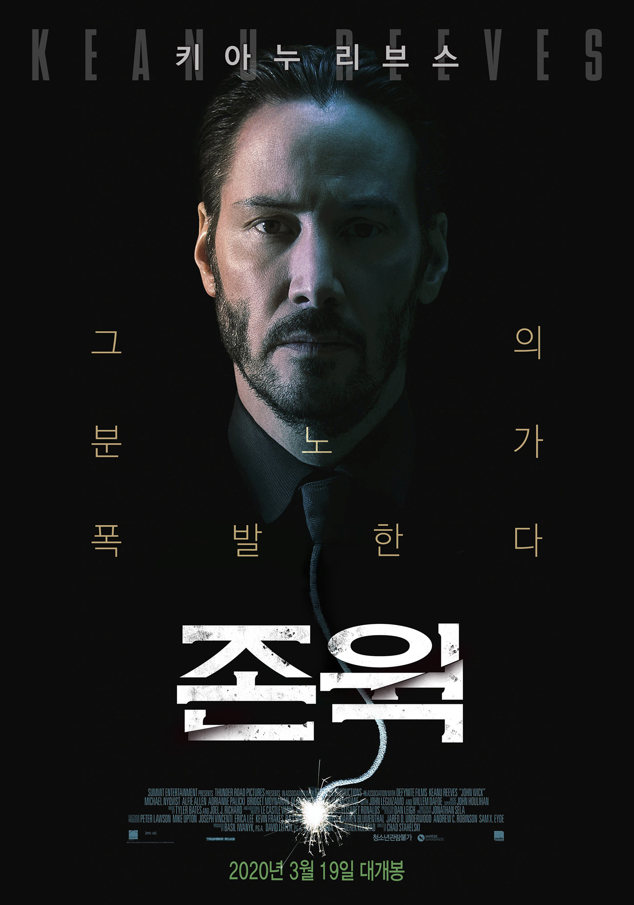
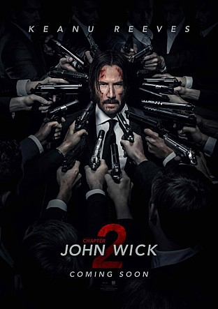
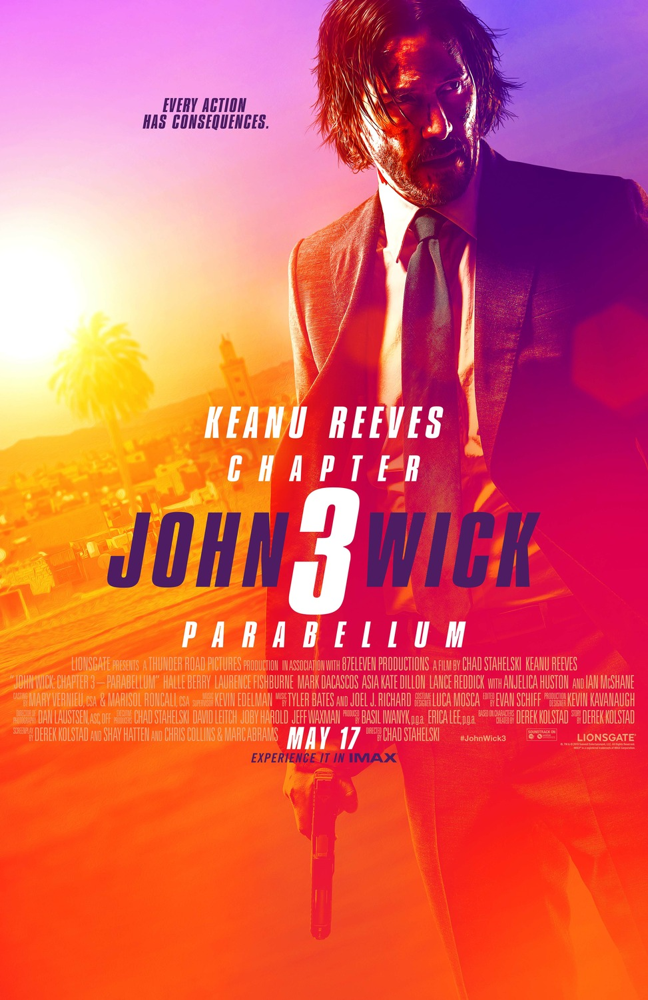

John Wick1
- John Wick
- 2015.01.21
그를 건드리지 말았어야 했다 상대를 잘못 고른 적들을 향한 통쾌한 복수! 전설이라 불리던 킬러 ‘존 윅’은 사랑하는 여인을 만나 결혼을 하면서 범죄의 세계에서 은퇴한다. 행복도 잠시, 투병 끝에 부인이 세상을 떠나고 그의 앞으로 부인이 죽기 전에 보낸 강아지 한 마리가 선물로 배달된다. 그러던 어느 날, 그의 집에 괴한들이 들이닥치는데…
John Wick2
- John Wick - Reload
- 2017.02.22
장전 완료! 준비는 끝났다! 업계 최고의 레전드 킬러 ‘존 윅’은 과거를 뒤로한 채 은퇴를 선언하지만, 과거 자신의 목숨을 구했던 옛 동료와 피로 맺은 암살자들의 룰에 의해 로마로 향한다. ‘국제 암살자 연합’을 탈취하려는 옛 동료의 계획으로 ‘존 윅’은 함정에 빠지게 되고, 전세계 암살자들의 총구는 그를 향하는데...
John Wick3
- John Wick - Parabellum
- 2019.06.26
전설이 된 킬러 ‘존 윅’ 룰을 어긴 죄로 그에게 현상금 1,400만 불이 붙고, 전 세계 모든 킬러의 총구가 그를 향한다. 국제암살자연맹의 파문 조치가 내려진 그는 아무런 보호도 받지 못한 채 시시각각 위험에 직면하고 결국, 마지막 전쟁을 위해 ‘소피아’를 찾아가는데… 출구는 없다! 평화를 원한다면, 전쟁을 준비하라!
John Wick Video